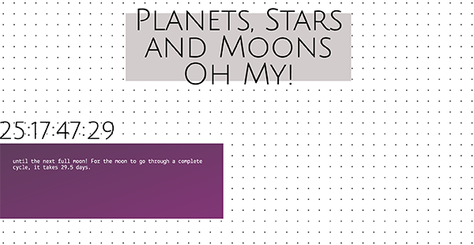

2.14.17
Time is on My Side

I designed my interface to display countdowns of different rotations and orbits
that we observe in space. I decided to do three countdowns which are displayed
in alternating left and right positions. With each countdown was a div that
provided more information about the particular rotation it was counting down.

The site greets you first with the title and as you scroll down you are exposed to the countdowns.
My tool tips were gifs of that particular movement the timer was counting. I thought that it gave
a nice visual touch to the numbers and text that are already provided.
Three Effective Features:
-
-Gif as Tool Tips :
Provides a visual to the information.
-
-Alternating Left/Right :
Separates the different peices of information for quicker distiction.
-
-Large Coundown:
It becomes the main focal point of the website and the other information acts as an aide.
2.7.17
The Archive
For my interface, I designed it around five plants that I have in my room.
I wanted to keep the overall look light and whimsical because it reflects
my relationship with these plants. I'm slowly learning how to care for them
and so I don't want to have a stiff, official look to it.
When you first see the site, you are greeted with a brief description of the
purpose of the interface and five illustrations of the plants. I added a hover
effect that faded in the color image of the plant to add more life and animation
to the page. I also changed the cursor to a water drop to add to the concept of
the page and as a fun reminder that plants need to be watered to survive.
When you click on the plant, the page automatically scrolls down to the section
that displays the plant alone. When you hover over the image, the info and
plant name pops up giving the user more about my experience with the plant and
it's name.
Some Key Features are:
-
-Hover effects :
Provide feedback and animation to the page.
-
-Cursor :
The cursor changes from the started pointer to a water drop
when hovered near a link for user feedback.
-
-Page Links:
Images are linked to elements of the page so that users
can easily jump to the correct location.
1.30.17
Web-based Form
Quizlet is a study tool that I like to use when I have many terms that I need to memorize. The website uses forms that allow the user to fill in the areas with their term and definition. The interface design itself is very straightforward
with rows that have an input area for the term and it's definition. They list five rows that you can start with and if you need more, you can simply click on the "+add card" button to add more rows. Once you are done with inputting data,
you hit "create" and quizlet with make a stack of study cards for you to use. I like this form because it's appearance is extremely simple so that I can input my data as quickly as possible. Visual hierarchy is created through use of color,
and headings. Nothing is distracting and the page is simple to use with appealing animations as you hover through different elements.
Check out:
Bill Derouchey's Learning Interaction Design From Everyday Objects
1.11.17
User Interface
The interface that I choose to analyze is GoogleMaps because I have no sense of direction and use the app quite often to find my way around. For a GPS app, it is very important that the interface is simple and easy to use as well as quick
because many people use this in their cars. I sometimes find myself needing to adjust the destination and I usually do that at stop lights which means that I don't have much time to fiddle around with different buttons and pathways. I
like that the GoogleMaps is simple to enter and exit out of a destination and allows for saved places for quicker navigation. The font is easy to read and the type is large enough to take a quick glance while driving. The map also switches
from day to night mode reducing the contrast while driving at night. Compared to other map apps like Apple Maps, Google Maps is the easiest in my opinion to use. The buttons are clear and big enough to press requiring less accuracy compared
to small buttons or text. Overall I think the the scale and navigation through the app is optimal and easy to use thus making it ideal for the environment that it is used in.